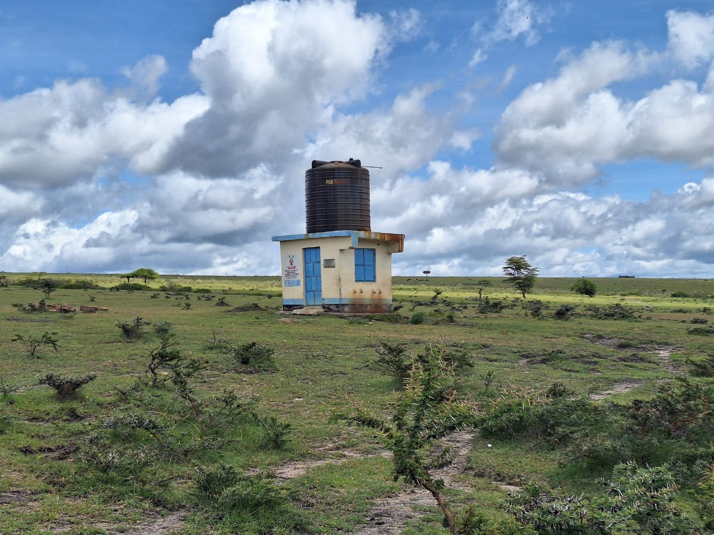
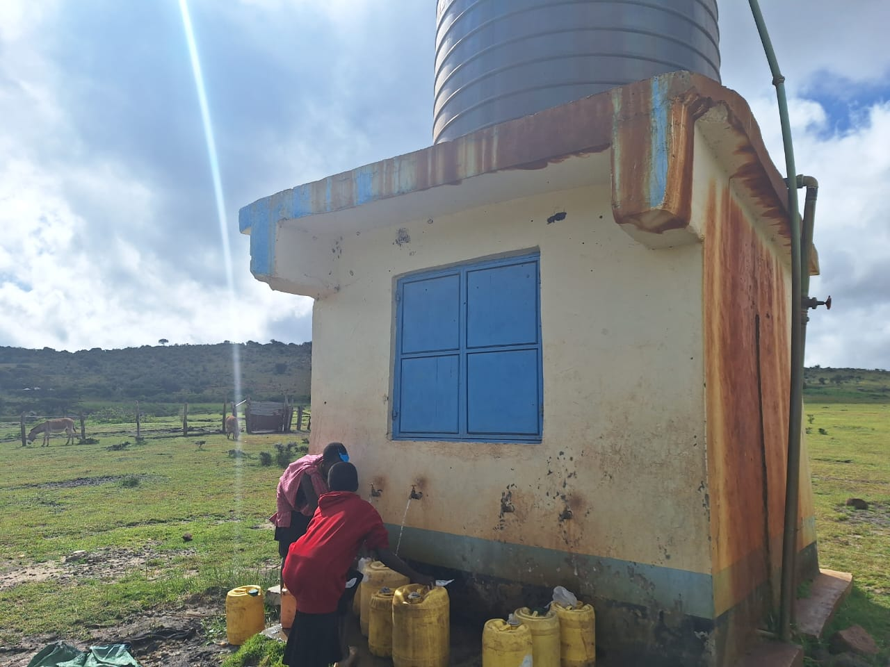

2 km solar transport
A photovoltaic-powered pump lifts raw water from the pond and delivers it across the plain to the treatment plant at the school. 100 % off-grid.
A passive, solar-powered water-purification plant for a school of 500+ children in rural Kenya. No electrical grid. No operating cost. Built to last.

TodayFive hundred students walk up to 4 km every day to fill yellow jerrycans at a weathered concrete tank. It's the only water source the community can reach.
The tank is fed from a surface pond with 159 units of E. coli — a level that classifies the water as severely contaminated. It's what fills the classrooms, the kitchens, and the bottles they take home.

Current water pointEvery stage of Vitalqua runs on sunlight and gravity — no chemicals, no moving parts beyond the solar lift.
A photovoltaic-powered pump lifts raw water from the pond and delivers it across the plain to the treatment plant at the school. 100 % off-grid.
Cascade aeration, settling tank, roughing filter, slow sand filter, biochar polishing. Every purification stage runs on gravity and biology — no electricity dependency.
Local operators trained by ADESCI maintain and expand the system from day one. We build; the community owns and runs.
End-to-end — from the source to the classroom.
The Vitalqua project is developed in partnership with ADESCI, a non-profit organisation with over 20 years of experience in international cooperation.
While our team focuses on the technical engineering and passive design, ADESCI ensures the successful execution and social integration on the ground. We partnered with them because they don't just build and leave: they conduct an active, continuous follow-up on all their completed projects from day one.
Their on-the-ground expertise is the key to guaranteeing that the Vitalqua infrastructure achieves long-term sustainability and true local autonomy.
Click here to visit the official ADESCI website ↗
Follow a drop of water through the seven-stage journey — from the solar pump at the source to a clean glass at school.
See the process